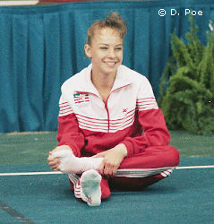

Juliet Bangerter (USA)
1987 US Olympic Festival UB Bronze Medalist

Juliet was born on January 21, 1974. She trained at the Desert Devils club in Tempe, AZ, with coach Stormy Eaton.
Competition Results
1984
AZ Class I Championships (children): 3rd AA
1985
Jr. JO Nationals: 49th AA
US Classic (Children's Division): 16th AA
USA Championships (Children's Division): 25th AA
1986
American Classic (Jr. "B"): 10th AA
1987
Jr. American Classic: 1st AA
Jr. USA Championsips: 3rd AA
KIPS Invitational: 4th AA
US Olympic Festival: 6th AA, 3rd UB
1988
Chunichi Cup: 12th AA, 6th UB
Flips Invitational: 5th AA
Jr. American Classic: 2nd AA
Jr. Pacific Alliance Championships: 15th AA
Jr. US Classic: 1st AA
KIPS Invitational: 3rd AA
Tokyo Cup: 4th FX, 5th UB
1989
American Classic: 2nd AA
Intl. Mixed Pairs: 8th Team
Jr. Buckeye Classic: 1st AA
KIPS Invitational: 1st AA
US Classic: 1st AA
USA World Trials: 9th AA
1990
USA Championships: 13th AA
1991
Desert Devils Classic: 4th AA
KIPS Invitational: 2nd AA
US Classic: 7th AA
US Olympic Festival: 24th AA
USA Championships: 16th AA
1992
Buckeye Classic: 5th AA
Desert Devils Classic: 5th AA
US Classic: 2nd AA
US Olympic Trials: 13th AA
USA Championships: 10th AA
This page was created on December
17, 2000 and was last updated on July 19, 2021.
© Gymn Forum